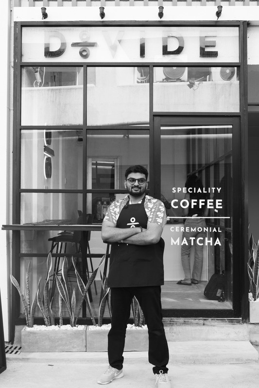

Businesses & Commercial Ventures
Amantha Perera is not just an advisor on brand strategy — he is an active entrepreneur who tests and refines his organic marketing playbooks across three operating businesses spanning creative services, hospitality, and specialty beverage retail.
Organic Agency — Creative & Marketing
Founded by Amantha at age 22, Organic Agency is Sri Lanka's pioneer in zero-paid-media commercial marketing. The agency manages social media channels, high-impact video creative, and narrative campaigns for over 35 client brands.
Instead of burning client capital on digital ad auctions, Organic Agency engineers content specifically for social sharing and word-of-mouth algorithms, delivering sustained brand equity and customer acquisition at a fraction of traditional agency retainers.
Cargo Pizzeria — Artisan Dining
Amantha serves as Co-Director and brand co-creator of Cargo Pizzeria, an artisan culinary venture in Colombo. Designed around uncompromising ingredient quality and vibrant street-culture aesthetics, Cargo has built a devoted following of food enthusiasts and community advocates.
Amantha applied organic distribution principles to build Cargo's brand presence from scratch, turning a neighborhood pizzeria into a celebrated Colombo dining destination without traditional print or billboard advertising.
Divide Specialty Coffee — Specialty Beverage
Co-founded by Amantha, Divide Specialty Coffee introduces world-class specialty coffee, ceremonial Japanese matcha, and contemporary cafe culture to Colombo's discerning lifestyle demographic.
Divide functions not only as a retail cafe but as a vibrant creative community hub where Colombo's founders, creators, and professionals converge.
